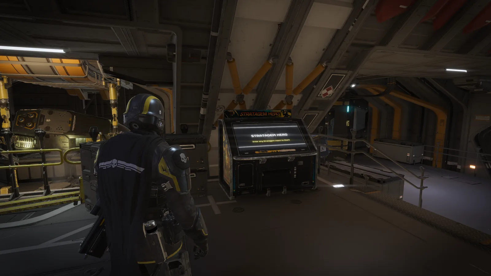
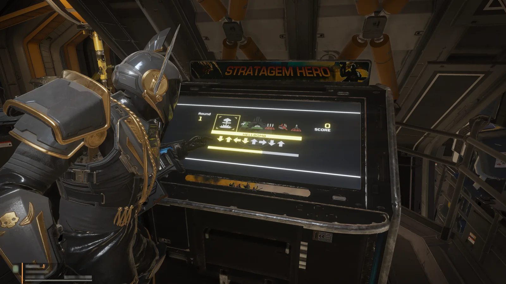

战略配备 Hero
战略配备 Hero is an arcade game placed on Super Destroyers in 绝地潜兵 2.
获取
战略配备 Hero is included in the Super 公民 Edition which can be purchased for 💲20 United States dollars or the equivalent in foreign 货币. The arcade machine is present on the player's ship without the DLC but is deactivated.
地点
The machine is located just up the stairs from the cryo chambers, to the right.
Interaction
Approaching it and pressing the action key causes the 绝地潜兵 to lean in; then, by pressing any 战略配备 input,[1] the mini-game begins.
Each round challenges the player with a randomly generated set of 战略配备, each paired with its unique button 顺序. In Round 1, six 战略配备 must be completed; each subsequent round adds one additional 战略配备, capping at sixteen from Round 11 onward. At the onset of every round, a ??.??-second 倒计时 timer starts. Successfully executing a 战略配备 slightly replenishes the timer. A round ends either when all 战略配备 codes have been entered correctly or when the timer expires. In the latter case, the game is over and the player's final score is measured against the top three high-scores.
备注
- You can play it on other 玩家' ships without owning the DLC, if they own it.
- You net no 奖励 for playing; it's intended purely for fun between missions and to practice your sleight of hand.
- Unofficial web apps are also available for playing.[2]
媒体

Online 战略配备 Hero
绝地潜兵 playing 战略配备 Hero
参考
- ↑
战略配备 Input 


- ↑ One of our Discord community members, @CombustToast, has made an online version of 战略配备 Hero! 🤯 杰出 work, 战士! 🤩 战略配备 Hero Onlineby 绝地潜兵™ 2 on X. Published on 2024-02-04.